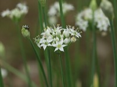

にら（韮）の生産量
いちばん多くとれる都道府県
にらが日本でいちばん多くとれるのは高知県です。1万6,100 tで、全国（5万5,200 t）の29%を占めます。

| 順位 | 都道府県 | 収穫量 | 全国に占める割合 |
|---|---|---|---|
| 1位 | 高知県 | 1万6,100 t | 29% |
| 2位 | 栃木県 | 8,060 t | 15% |
| 3位 | 茨城県 | 7,200 t | 13% |
この数字について
- 分類：ヒガンバナ科
- 全国の収穫量：5万5,200 t
- この数字が表すもの：収穫量（畑や田でとれた重さ）
- 調査：作物統計調査 作況調査（野菜） 令和6年産
- 13県分を調査（調査していない県は順位に入りません）